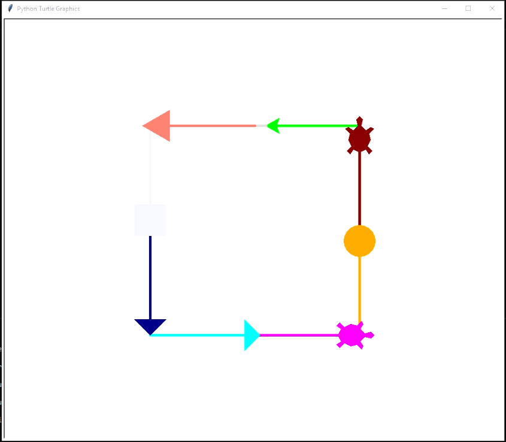
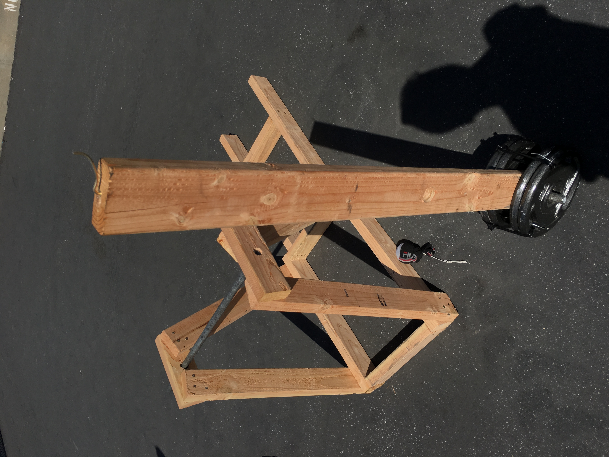
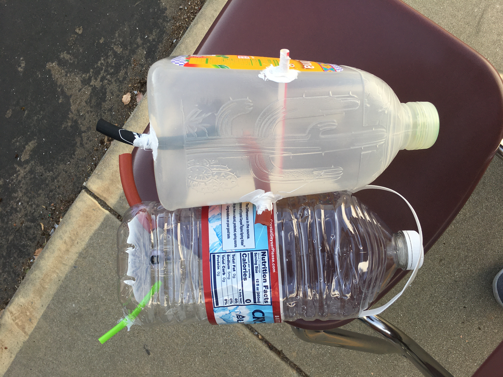

This project was created at the beginning of my computer science class. Not being familiar with how python worked, it took longer to finish the program than
expected. I was inspired by the "for" command in python on how it could move multiple turtles at once. My original idea was to make a circle full of turtles
and the turtles would move relative to that circle, but it turns out the math needed to pinpoint the specfic circumference of the circle would be too much work.
Instead I opted for a square, which made my life a whole lot easier since all motion is linear and doesn't need to be calculated through math, giving the turtles
easy directions to move in. The if statements were also fun to make, since I had to determine first how many colors I wanted the turtle to change into and then
mark the regions with the if statements was really fun to figure out.
.png)
The second project we had to make was a game. I planned to create a RPG that had a full shop, leveling system, and could store information. Sadly, as I started
trying to code the game, it turned out to be too tough of an idea to create. Instead I improvised into creating a much simpler system. Instead of an onclick
element, it uses a key press element instead. As shown in the picture, A is for attack and D is for defense. Both actions have a chance to produced a special
action. The attack has a chance to criticaly strike, does double damage, and defend has a chance to heal the player. Making this RPG was a really interesting
experience on learning how to implement stats for a player and the enemy.
.png)
This project's goal was to make a productive GUI, graphical user interface. My goal of the project was to make a typing test, which would calculate typing speed.
The GUI works by storing the value of the entry at the beginning, then it asks the user to type a simple sentence. After typing it will post the amount of time
it took to type out the sentence. This value can be used to calculate how long it will take to write certain papers. For example, if someone needed to calculate
how long it would take to write 100 words, they can use the time they received from the test and calculate it.

This project is designed to create a website that will hold all of our projects as a way to document it. It was a really fun experience to learn how to code in
html and CSS.
Physics
Turtles in Motion
Basic RPG
Typing Test
Digital Portfolio

The first hands-on project in physics was the Trebuchet. It combines a variety of different aspect of physics. It uses conservation of energy and projectile motion.
The trebuchet works when a weight is brought above the throwing arm, and it uses the force of gravity to accelearte the weight which in turn will cause the arm
to throw the ball attached to it. The momentum from the potential energy of the weight is what causes the ball to be thrown. This project was very enjoyable to
do, since it allowed me to understand the fundamentals of physics.
Trebuchet

The fluids project is used to help understand how fluids flow. The premise of the project is to understand that gravity has effect on the flow rate of a fluid.
Flow rate is calculated by multiplying velocity by area of the tube. The velocity from the tank is "v = Cv (2 g H )^1/2". The formula shows how gravity affects
the velocity of the liquid flowing out of the container and as the height of the fluid increases the potential energy of the water increases. Therefore, the
taller container will have a faster flow rate because it has more water, in turn more potential energy.